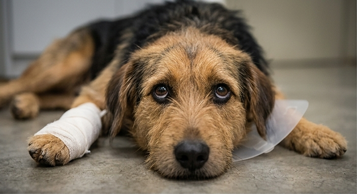
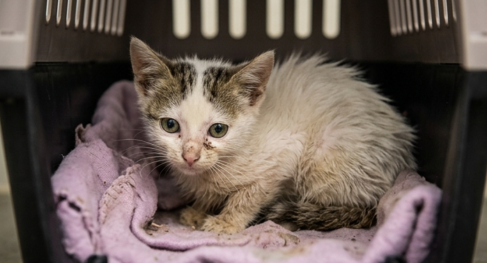
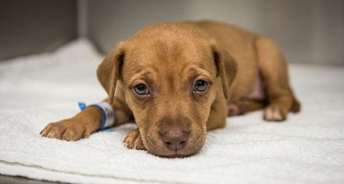
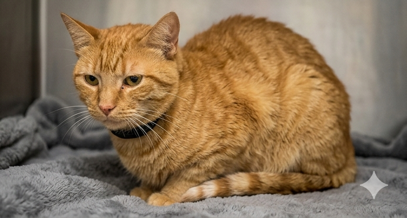

Conheça os animais resgatados que estão lutando por suas vidas. Os custos com cirurgias, internações e medicamentos intensivos são altos, e não podemos salvá-los sem a sua ajuda. Cada centavo aproxima um animal da cura.

Situação: Atropelamento próximo ao RU. Fratura exposta na pata traseira e hemorragia interna.
70% alcançado! Faltam apenas R$ 450.

Situação: Resgatada com esporotricose avançada e desnutrição severa. O tratamento é longo.
15% alcançado. Precisamos iniciar a medicação!

Situação: Filhote com Parvovirose severa. Internada com vômitos e diarreia. Custo diário alto.
40% alcançado. Sua doação paga as diárias!

Situação: Diagnosticado com obstrução uretal crônica. Precisa de uma cirurgia urgente.
85% alcançado! Faltam apenas R$ 300 para a cirurgia.